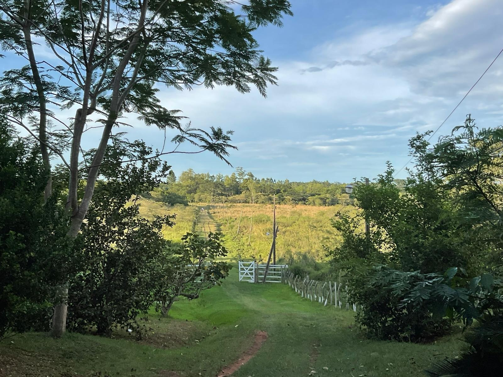
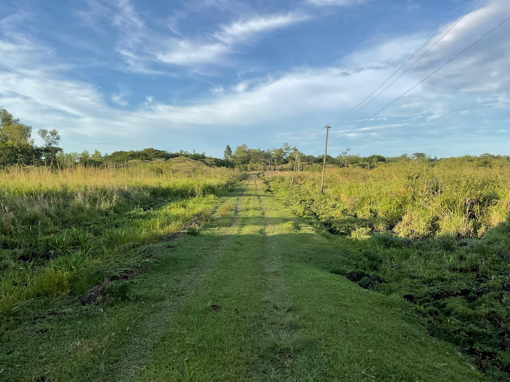
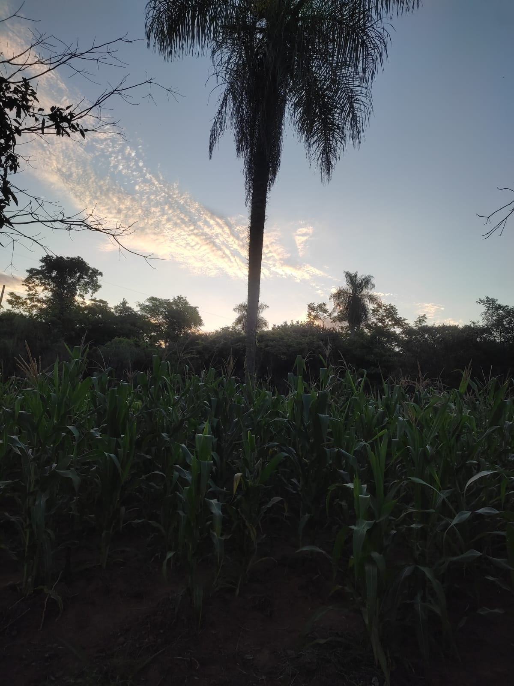
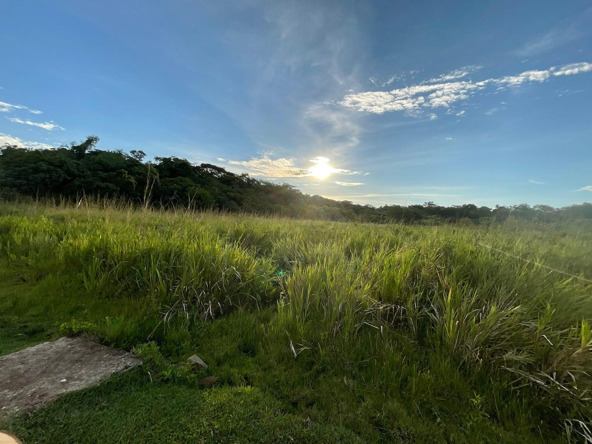
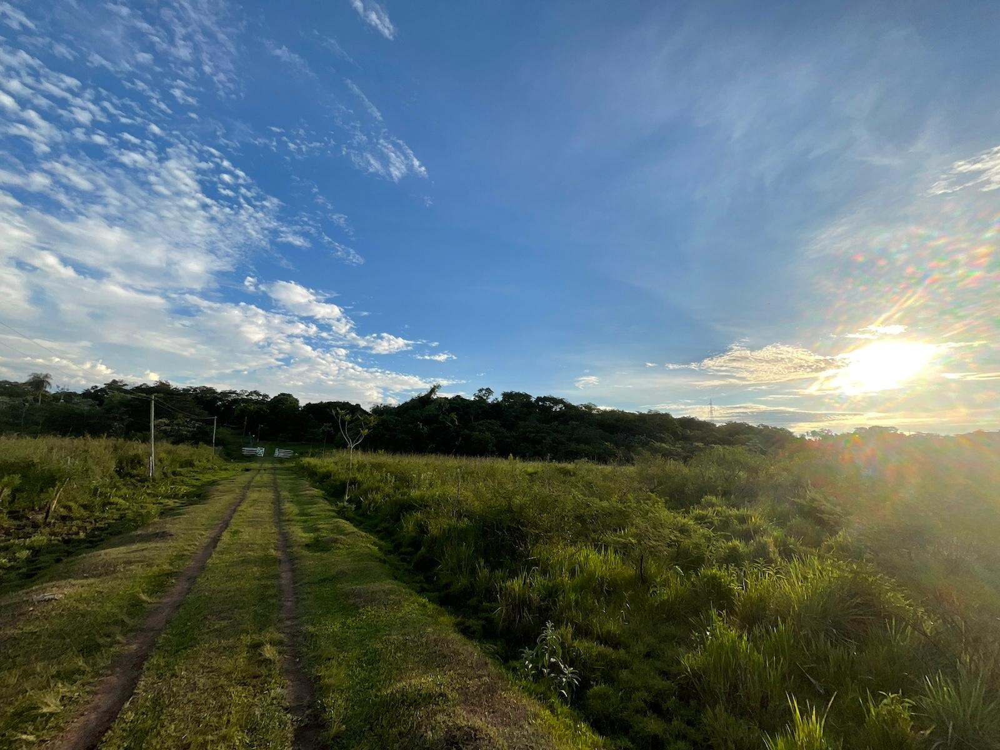
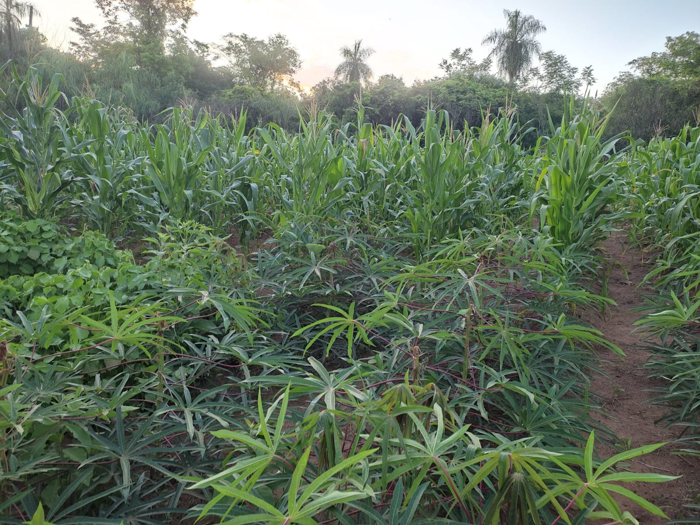
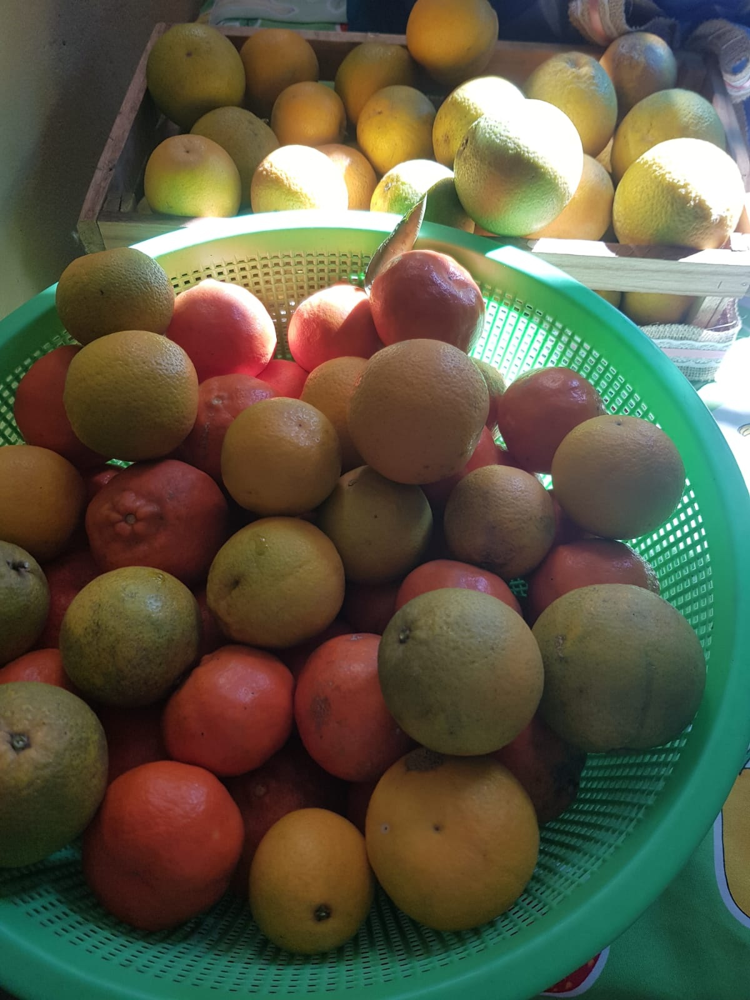
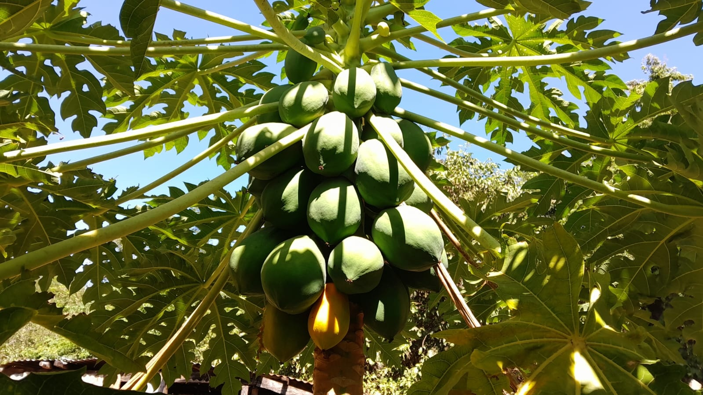
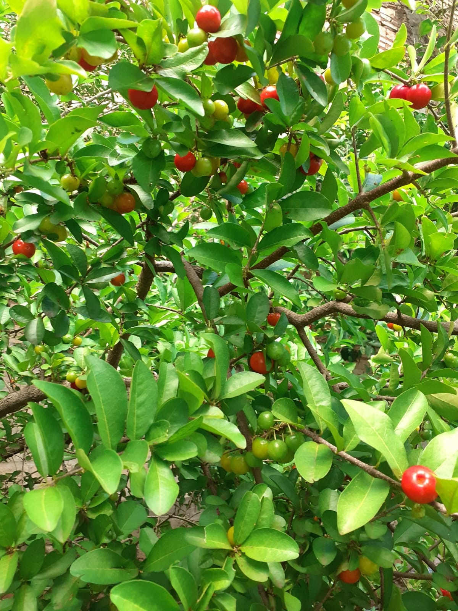
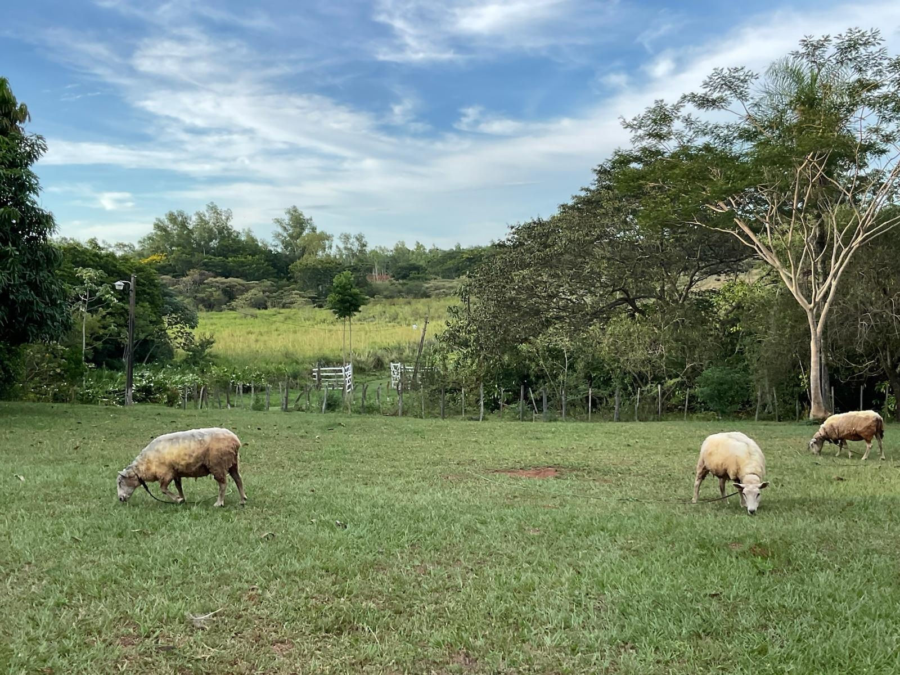

×

Hospedaje tranquilo y único donde la naturaleza, la tranquilidad y la autenticidad se encuentran en armonía
Ubicada en una zona elevada y privilegiada de San José de los Arroyos, Granja Don Gregorio es más que un hospedaje: es un refugio donde la autenticidad rural se encuentra con la comodidad.
Aire puro, paisajes verdes y tranquilidad absoluta alejado de la ruta internacional
Ubicación en subida que ofrece un clima fresco y agradable durante todo el año
Habitaciones cómodas diseñadas para tu descanso y bienestar total
Contacto con animales de la granja y actividades rurales auténticas
Nuestro compromiso es ofrecerte una experiencia donde puedas desconectarte del ruido de la ciudad y reconectarte con lo que realmente importa: la tranquilidad, la naturaleza y la convivencia auténtica.

Actividades diseñadas para conectar con la naturaleza y el estilo de vida rural
Habitaciones acogedoras con vistas a la naturaleza, perfectas para descansar y disfrutar de la tranquilidad.
Recorre nuestras tierras y descubre la flora, fauna local y paisajes que te cautivarán.
Disfruta de comidas caseras auténticas preparadas con ingredientes frescos de la región.
Interactúa con los animales de la granja: ovejas, ñandúes y más en su hábitat natural.
Amaneceres y atardeceres espectaculares listos para capturar en tus fotos.
Organiza reuniones, celebraciones y eventos en un ambiente natural incomparable.
Imágenes que capturan la esencia de Granja Don Gregorio









San José de los Arroyos, Primavera Km 95, Ruta PY 02, Paraguay
Ver en Google Maps🌡️ Clima: Fresco y agradable
🕐 Atendemos todos los días
🚗 Acceso por ruta tranquila
Ponte en contacto y planifica tu visita a Granja Don Gregorio
"Un lugar mágico donde la paz y la naturaleza te abrazan. Volveré una y otra vez."
"Impresionante. Las vistas, el clima, la tranquilidad... todo es perfecto. Recomendado 100%."